第 1 章 初识 AI Infra
前言介绍了本书的写作缘起、章节安排和阅读方法。本章起沿着模型的执行过程，认识支撑这一过程的系统。AI Infra 是支撑 AI 训练和推理的基础设施，包括计算设备、存储与互联，以及组织这些资源的软件。训练通过样本调整模型参数；推理使用训练得到的参数处理输入、产生输出。
本章先说明应用如何通过代码、模型与上下文共同表达任务，再沿一次请求的处理过程认识系统，用容量、算力和带宽回答具体的设计问题：数据能否放下，回答要等多久，增加加速器或改变数据表示能带来多少收益。最后回顾几个真实架构的形成过程，说明需求如何推动系统设计。
1.1 AI Infra 为什么重要
1.1.1 编程抽象上移：从操作系统到模型上下文
以文档问答服务为例。开发者先规定文档读取、检索和结果展示的程序流程，再把用户问题与检索到的材料交给语言模型生成答案。上下文（context）是本次模型调用可以使用的输入内容，包括任务指令、参考材料和此前的交互结果。保持模型参数不变，改变指令、示例或参考材料，就能改变模型处理的任务及回答方式。
若让该服务检查代码，可以把代码、测试要求和可调用的工具一同提供给模型，由模型提出修改方案或发起工具调用；应用程序执行测试，把结果加入下一次调用的上下文，再由模型继续判断。工具是供应用调用的程序功能，例如读取文件或运行测试。模型负责选择下一步做什么，宿主程序负责检查权限、执行操作和保存结果。完成一次任务可能需要多次模型调用和工具执行。
抽象是把复杂实现封装在明确的接口之后，让开发者用较少的概念组织程序。可编程性是开发者通过某种接口改变系统行为的能力。传统应用主要用程序代码表达行为，编译器将代码转换为可执行指令，操作系统管理程序运行所需的资源。模型驱动的应用增加了另一个重要入口：通过选择模型、组织上下文和提供工具来表达任务。一部分原来需要逐条编写规则才能实现的行为，现在由模型根据上下文决定；代码继续组织调用流程，工具程序继续通过操作系统访问文件、网络和设备。1
图 1-1 对照了这两种组织方式。右侧的 Agent 负责组织上下文、调用模型，并执行模型选择的工具。其中，模型接口规定应用如何提交输入、取得输出。接口背后的运行系统计算模型输出，并保存后续步骤需要复用的上下文状态；加速器是适合并行执行大量模型运算的处理器，内存保存参数与运行状态，互联在设备之间传递数据。开发者从上层改变任务，底层要把这些变化落实为具体运算与数据访问。
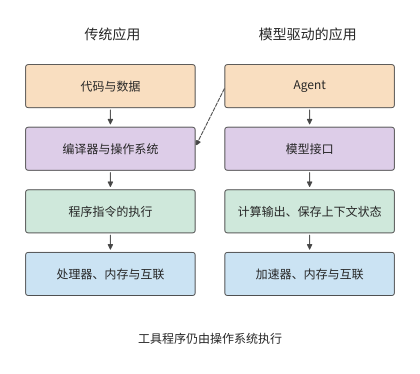
图 1-1 应用行为的表达方式与执行路径。左侧通过代码组织程序，右侧通过上下文调用模型；实线表示向下的执行依赖，虚线表示工具执行仍需传统操作系统。加速器、内存与互联分别承担模型计算、数据存储和设备间传输的职责。
可编程性的变化也改变了模型服务的运行方式。在 AI 系统中，同一个模型为不同应用处理请求时，使用的是同一组参数。系统可以将多条请求合并计算，共用一次读入的参数，提高加速器利用率。这种方式称为批处理，每批共同执行的请求数称为 batch size（批次大小）。与此同时，长文档、长回答和多轮工具调用会改变计算量、状态占用和等待时间。同一个模型、同一套加速器，处理不同任务时，性能可能相差甚远。
这种性能差异的背后，是模型与硬件之间的相互影响。从模型设计来看，压缩保存的状态、改变注意力机制或只使用部分模型参数，可以改变硬件需要完成的工作；从硬件条件来看，存储容量、数据传输速度和设备连接方式，又会影响哪些模型结构和执行方法更合适。理解这种双向关系，才能同时讨论回答质量、响应时间和成本，并解释为什么适合一个应用的方案，用于另一个应用时还需重新评估。
在以模型训练和推理为主要应用的系统中，各层可以围绕同一个完整的执行过程共同设计。模型结构给出计算和数据依赖，运行时掌握状态何时产生、何时使用，硬件承担相应的运算和传输。利用这些信息重新组织执行，可以消除通用实现中的部分开销。同一模型又能根据不同上下文处理多种任务，既能支持多样的应用行为，又能让底层针对模型执行做专门优化。上层可编程性的变化，为跨层联合优化打开了新的空间。 本书用量化分析研究这些优化机会，解释原有的设计取舍如何改变，新的实现又如何提高训练和推理的性能。
1.1.2 从任务到硬件的六层分工
一次请求从提出到完成，要依次经过系统的多个层次。用户提交一段代码，请模型找出错误。应用把代码和问题交给模型服务，服务选定执行请求的加速器，加速器读入权重与输入、完成计算，再把生成的回答交回应用。若多个加速器共同执行，还要在加速器之间传递中间结果。沿这条路径，就能逐步找到等待发生在哪里、哪份数据需要搬移。
华为半导体首席科学家廖恒博士提出 “十八层宝塔”，用来描述从应用、模型与软件系统，到芯片、制造工艺和底层物理的多个层次。他指出，大多数人只了解其中的一层或几层，因而错失了许多跨层联合优化的机会。2 图 1-2 借鉴这一方法，将本书内容划分为六个层次：
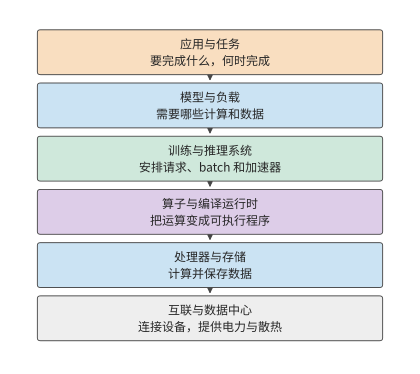
图 1-2 从应用到硬件的六层分工。
最上面是应用与任务。对话、代码生成、语音交互，以及能够调用工具推进任务的智能体（Agent），都在这一层提出具体要求：要完成什么任务，多快返回结果，成本上限是多少。训练也有自己的任务目标，例如在给定时间内完成一次模型更新或一轮预训练。
下一层是模型与负载。模型结构规定要做哪些计算、保留哪些数据；实际负载则决定这些工作何时到来、持续多久。一句简短的提问和一篇长文档，即使交给同一个模型，也会形成不同的计算与存储需求。模型结构在第 2 章展开，训练与推理负载在第 3 章展开。
训练与推理系统负责把这些需求组织成可执行的工作。这一层接收请求或作业，组织 batch，管理运行状态，并决定如何使用一个或多个加速器。在推理中，它要协调正在生成的请求和新进入的请求；在训练中，它还要组织参数更新、通信和恢复。第 8—10 章讨论这一层。
再向下是算子与编译运行时。模型中的矩阵乘法、归一化（按统计量调整数值尺度）等操作，需要转换为处理器能够执行的程序。本书把矩阵乘法等基本运算称为算子；算子库提供这些运算的实现，编译器把程序转换为加速器可执行的形式，运行时负责提交程序和管理执行中的资源。三者共同决定如何分块、如何使用临时存储、何时提交工作。相同的数学表达式，可以有不同的数据访问和执行方式，第 5 章会具体分析这些差异。这里还有理解分布式并行的一条线索：矩阵在一张卡内可以分块执行，模型在多张卡上也可以按样本、序列、特征、层或专家（混合专家模型中按输入逐个选用的子网络）分工。两者都要先确定每块由谁计算，再安排输入到达与结果汇合。区别在于块之间跨越的是片内存储、显存还是网络。第 6 章将沿这条线索解释各种并行策略，而非将其视为互不相关的技巧。
处理器与存储负责执行计算、保存数据。CPU 是执行通用程序的中央处理器；GPU 是擅长并行处理大量相似运算的图形处理器，如今也广泛用于模型计算；NPU 是面向神经网络运算设计的处理器。主存存放 CPU 使用的数据，显存存放 GPU 使用的数据，片上存储则位于处理器芯片内部，让计算单元能就近读取数据。计算单元先读取输入，再执行运算，最后写回结果。第 4 章将从计算能力与数据读取速度的关系出发，解释加速器的设计。
最下面是互联与数据中心。设备之间通过互联交换数据，服务器和更大的协作组通过网络连接，供电与散热决定资源能够如何部署。第 6、7 章讨论超节点与数据中心网络，第 12 章进一步把执行位置扩展到端、边和云。
六个层次说明了主要分工，但有些能力贯穿多个层次。资源调度、运行环境、观测和计费需要结合多个层次的信息来组织；工艺、封装、供电和散热则决定设备能够如何制造和部署。网络也并非只在最下方发挥作用：需要跨设备协作的模型、算子和服务，都要经过具体互联。
沿这六层向下看，任务逐步变成具体的计算与数据访问；向上看，加速器的可用存储容量、算力与带宽决定系统能运行多大的模型、同时处理多少请求，以及能多快作出响应。这些层次之间的接口，也是联合优化的切入点。模型改变状态表示，会改变存储和通信需求；编译器将相邻算子融合，会改变中间结果的存放位置；运行时让加速器直接交接，会改变主机参与的次数。
1.1.3 一次生成请求的处理过程
推理实例是能够独立完成模型请求的一组执行资源，可以由一个或多个加速器组成。每次请求交由其中一个实例处理。图 1-3 展示了请求分配与实例内部执行的分工：服务路由器是选择请求执行位置的软件；路由器选定实例后，由实例内部安排加速器执行模型。先分清谁负责执行，才能知道一份权重应放在哪里、一份中间结果应传给谁。
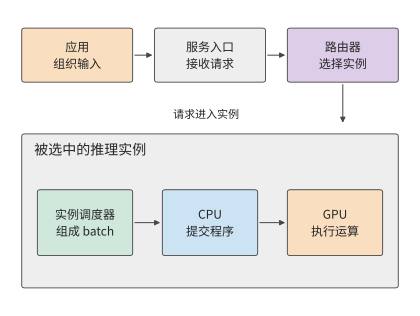
图 1-3 一次请求先由路由器选择推理实例，再由实例内部的调度器安排执行。灰色外框圈出同一个实例，实线表示请求和工作提交的方向。
上下文包括用户输入、已有对话、检索结果和此前生成的内容。应用把这些信息组织成请求，交给模型服务入口。入口核验访问权限、检查配额和请求内容后，路由器依据目标模型、实例负载等条件选择一个实例；实例可以运行在一张卡上，也可以分布在多张卡上。选定实例之后，实例内部再安排这些卡协作。
文本随后转换成 token 序列。词元（token）是模型处理文本的基本单位，可能对应一个字、词的一部分或其他片段，具体文本的 token 数由分词结果确定。文本转换可以由实例或共享前端完成。实例调度器将请求放入队列，再编入 batch，并为其状态分配空间。CPU 上的运行时随后向 GPU 提交计算任务，GPU 执行相应算子。3
模型先处理输入，这一阶段称为预填充（prefill）；随后逐步生成新 token，这一阶段称为解码（decode）。后续步骤会复用此前保存的状态，其中的 KV 缓存（KV cache）保存上下文 token 产生的键和值两类向量，供后续位置的注意力计算使用。键和值是注意力机制使用的数据表示，第 2 章将结合具体运算说明键和值如何产生。生成循环由实例内部的调度器持续推进，前一步输出成为下一步输入。产生的 token 经输出处理转换为文本，沿连接流式返回；如果输出要求调用工具，应用运行工具，把结果加入上下文，再发起后续调用。
上述每步计算反复使用的数据，首先是模型权重。模型权重是训练得到、用于把输入变换成输出的数值参数。权重在实例启动或模型切换时从存储加载，随后持续存放在显存中（称为驻留），供多次请求使用。生成时，GPU 计算单元从显存读取当前层的权重和上下文状态，完成运算，再将结果交给下一层。同一份数据由此经历两种频率不同的搬移：加载把模型送到加速器，执行则反复把所需数据送到计算单元。在多卡实例中，一张卡算出的中间结果还要传给其他卡，后续计算才能继续。中间张量是运算产生并交给后续运算的多维数值数组，矩阵就是二维张量。外部请求可能只有一小段文字，内部搬移的数据却包括大得多的权重、状态和中间张量。
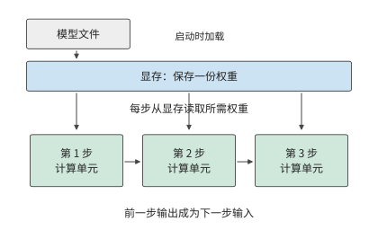
图 1-4 权重加载一次，生成时逐步读取。蓝框表示显存中持续保存的同一份权重，三个绿框表示先后发生的计算；箭头表示读取或结果依赖，步骤间距不代表耗时。
图 1-5 展示这些软件功能对应的硬件。数据中心包含入口与 CPU 服务、共享存储，以及由多个超节点构成的加速器资源池。超节点是一组通过高带宽互联紧密协作的加速器，可以分布在多个服务器或计算托盘（机柜内装有 CPU 与加速器的可插拔单元）中。
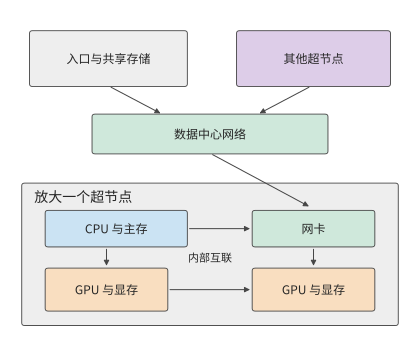
图 1-5 物理连接的两层视图。上方用数据中心网络连接服务与超节点，下方放大一个超节点，显示主机、网卡、GPU 与显存；线条展示数据路径，设备数量用于示意。
在服务器或计算托盘内，CPU 连接主存，负责主机程序和执行控制；GPU 连接各自的显存，执行模型计算、保存运行所需的数据。HBM（高带宽内存）是加速器常用的一类显存，通过宽接口持续提供数据。CPU 与 GPU 可以通过 PCIe（高速外设互联）连接，GPU 之间也可以通过独立的高速互联直接交换数据。网卡把本机连接到网络。在支持直接内存访问的系统中，数据可以由传输硬件直接写入指定内存区域，CPU 负责发起和管理传输；第 7 章会进一步解释这种交接。
超节点内部的互联通常称为 scale-up（纵向扩展），重点是让一组加速器以较低的通信开销共同计算；多个超节点再通过网卡与交换网络相连，称为 scale-out（横向扩展），用来扩大集群范围。两者都要考虑带宽、延迟、拥塞与故障，但协作范围和代价不同。以 NVIDIA 的 GB200 NVL72 为例，官方设计把 36 个 Grace CPU 和 72 个 Blackwell GPU 组织在一个机柜中，72 个 GPU 通过 NVIDIA 的 GPU 高速互联 NVLink 直接协作，形成同一个互联域，集群网络则负责对外连接。这种组织方式把紧密协作的范围从单机扩大到了机柜，模型可以在更多加速器之间分配权重和状态，频繁的交接则由机柜内互联完成。4
AI 网络与传统数据中心网络由此形成了分工。服务入口传递请求，共享存储提供模型文件，加速器互联传递计算中的中间结果。三种流量的传输频率、数据量和依赖关系不同：模型文件可以提前加载，当前层的部分结果却必须及时到达，下一层才能继续。物理连接因此直接影响模型的执行时间。
练习 1-1〔延伸〕：一次请求中的权重读取、状态增长与数据传递
沿图 1-3 至图 1-5，补画 KV 状态随输出增加的过程，再分别标出模型文件加载、一步权重读取、KV 追加和卡间结果传递。若回答从 100 个 token 增至 1000 个，哪些数据只加载一次，哪些访问会增加？若把一个实例复制成两个实例，权重容量与请求路由又怎样改变？
一次模型执行既受单卡能力影响，也受加速器连接方式影响。单卡的算力和存储带宽决定本地计算与读写的耗时，多卡协作则增加数据交换和等待。本章先估算单卡执行，后续章节再把同样的方法用于超节点和网络。
先介绍一组贯穿全书的真实模型。DeepSeek V4 和 V4.1 Flash 提供了一条可以持续追踪的线索。V4 已经通过上下文压缩与稀疏访问改变存储和读取需求，V4.1 Flash 则进一步重新划分模型内部的职责。传统的 decoder-only（仅解码器）模型通常让输入 token 经过完整主干，逐层建立生成所需的状态；V4.1 Flash 采用因果编码器—解码器（Causal Encoder-Decoder，CED）架构，由编码器形成上下文表示，解码器从这些表示取得全局信息。大量输入 token 因此无需经过解码器主体的计算；生成新 token 时，模型仍依次经过编码器与解码器。输入与输出的执行路径并不对称，模型因此能针对 Agent 输入多、输出相对少的负载重新安排计算投入。5
这是一项架构层面的选择，也会改变系统需要保存和传输什么。本书将围绕同一类会话展开讨论：Agent 等待工具返回，恢复此前上下文，处理新增输入，再继续生成。第 2 章解释 CED 的结构与状态，第 3 章分解输入和生成负载，第 4—7 章追踪加速器执行和数据路径，第 8、9 章讨论如何缓存状态、分配请求，最后比较完整任务的执行效果。开源模型 Qwen3 提供基础算例，用于建立计算方法；V4／V4.1 用于检验模型与系统如何共同改变。
1.1.4 从存储程序到数据流执行
理解 AI 加速器，可以先把处理器和存储器想象成一座大楼。所有厕所都集中在一楼时，楼上的人每次使用都要下楼，距离和拥堵会限制整座大楼的效率；如果每层都建厕所，访问距离缩短，却要占用更多面积，还要安排管道、维护和容量。寄存器、缓存、片上缓冲、显存和主存，正是不同距离、容量和成本的数据访问点。
计算机体系结构的演进，始终围绕着怎样缩短这段距离展开。存储程序计算机用可寻址存储器保存指令和数据；处理器速度提高以后，寄存器、多级缓存、预取、向量指令和并行执行相继出现，用更近的存储和更多的在途请求减少等待。GPU 和 AI 加速器又把数据复用变成显式的执行结构：线程协作使用共享内存，矩阵单元沿固定路径复用操作数，搬移引擎与计算单元并行工作，编译器安排分块、布局和缓冲。
Transformer 的 prefill、decode、KV 访问和专家路由具有不同的复用范围，不能只依赖一套自动缓存策略。加速器因此需要把计算单元、局部存储和数据通路一起设计；后面的章节会从这些资源出发，说明一次模型执行怎样变成可计算、可搬移、可调度的系统工作。
1.2 系统设计的关键数字
1.2.1 用数量级判断方案
估算单卡执行之前，先要知道各类基本操作大致耗时多少。Jeff Dean 在 2009 年的一次演讲中列出了一张后来被广泛引用的表，标题是“Numbers Everyone Should Know”。表中既有缓存、内存的访问时间，也有磁盘和网络操作的时间。这张表体现了一种实用的工作方式：在写程序或搭建系统之前，先估算主要操作需要多少时间和资源。6
下面完整列出原幻灯片的 12 项操作和数值。所有时间统一为 ns（纳秒，十亿分之一秒）；1 μs（微秒）等于 1000 ns，1 ms（毫秒）等于 1000 μs。数据单位中，1 byte（字节）等于 8 bit（比特）；bit/s 表示每秒传送的比特数，Gbit/s 中的 G 表示十亿。容量单位 KB、MB、GB、TB 分别表示 、、、 字节；KiB、MiB、GiB 分别表示 、、 字节。这组数字对应 2009 年的设备环境，用于理解不同操作之间的数量级关系。
缓存保存近期可能再次使用的数据；一级缓存通常比二级缓存更小、更靠近计算核心。分支预测是处理器对接下来执行哪条指令路径的预判，预测错误时要重新安排执行。线程是程序中独立调度和执行指令的单位；互斥锁限制多个线程同时访问同一份共享数据。磁盘寻道是机械磁盘移动磁头、定位目标磁道的过程。Zippy 是 Google 当时使用的压缩库。这些操作分别涉及计算、同步、存储与网络，耗时可能相差多个数量级。
| 操作 | 时间（ns） |
|---|---|
| 访问一级缓存 | 0.5 |
| 分支预测错误后的恢复 | 5 |
| 访问二级缓存 | 7 |
| 对互斥锁加锁或解锁 | 25 |
| 访问主存 | 100 |
| 用 Zippy 压缩 1K 字节 | 3,000 |
| 经 1 Gbit/s 网络发送 2K 字节 | 20,000 |
| 从主存连续读取 1 MB | 250,000 |
| 同一数据中心内往返 | 500,000 |
| 磁盘寻道 | 10,000,000 |
| 从磁盘连续读取 1 MB | 20,000,000 |
| 数据包从加州到荷兰再返回 | 150,000,000 |
取其中三个历史数字：主存访问约 100 ns，同一数据中心内的一次往返约 500,000 ns，磁盘寻道约 10,000,000 ns。换算单位后即 0.1 μs、0.5 ms 和 10 ms，如图 1-6 所示。
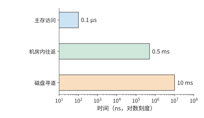
图 1-6 Jeff Dean 2009 年演讲中的三种操作延迟。横轴为对数刻度，每相邻数量级相差十倍；先识别操作，再比较它们在串行等待中的代价。
按这组数字，一次磁盘寻道所需的时间约为一次主存访问的十万倍。若请求需要依次等待多次访问，这些延迟就会累加，延长请求的完成时间。若请求必须先找到一块数据，才能确定下一次访问的位置，处理器在两次访问之间即使只做很少的计算，也要等待整个存储访问过程。
例如，设请求串行执行 20 次寻道，每次 10 ms，全部 CPU 计算为 1 ms，总时间就是 201 ms。把计算速度提高一倍，只能节省 0.5 ms；把相关数据连续放置，将寻道次数从 20 次减为 10 次，则节省 100 ms。两种优化分别作用于计算与等待，收益的差距来自它们在原执行时间中的占比。
把时间分解后，就能算出优化方向：某一部分在原总时间中占比越大，缩短这一部分对整体的改善越大。在前面的寻道例子中，计算只占总时间的 ；即使这一部分完全消失，总时间也只减少约 。
将上述关系推广，便得到总加速比的计算公式。若原执行时间中有比例 的部分能够加速 倍，其余工作与执行次序保持不变，则总加速比为：
这就是 Amdahl（阿姆达尔）定律。即使把这部分加速到耗时可以忽略，总加速比也不超过 。当寻道次数减少时，被缩短的是占比最大的等待部分，因此这项优化对总时间的作用远大于 CPU 加速。
例：同样使用 AI 编程工具，为什么不同团队的整体加速比不同？ 假设完成一项开发任务，需要依次经历沟通、编码、评审和审批等环节，AI 编程工具让编码速度提高到原来的 5 倍，其他环节的耗时保持不变。在协调层级较多的大公司团队里，编码可能只占原总耗时的 20%—30%，其余时间花在开会、跨团队沟通和审批上。代入公式，整体加速比只有约 1.19—1.32 倍。例如，原来需要 100 小时，其中 20 小时用于编码；编码缩短到 4 小时，其他环节仍需 80 小时，总耗时就是 84 小时。
在沟通成本较低的创业团队里，假设编码占原总耗时的 70%—80%，同样的编码加速就能让整体加速比达到约 2.27—2.78 倍。以编码占 80% 为例，原来的 100 小时变成 小时。
Amdahl 定律适用于任何只加速部分环节的完整流程。 CPU、模型推理和软件开发都可以用同一个问题来分析：被加速的部分原来占多少时间，剩余时间花在哪里？想进一步缩短交付时间，就要继续改善沟通、评审和审批等环节。局部速度的提升，最终要放回完整任务中衡量。
这张表体现的方法可以直接用于模型执行：先确定各项工作使用什么资源，再比较所需时间。
1.2.2 分析 AI 系统需要哪些关键数字
设某任务同时需要保存 字节，执行 次浮点运算，并通过某个存储接口读写 字节。加速器提供容量 、计算吞吐 和接口带宽 。这三类需求必须分别与加速器提供的资源比较：
容量决定能否同时保存所需数据；后两项把工作量换算为时间。一份数据可以保存一次、读取多次，所以 与 要分别计算。若 和 取峰值，得到的就是完成指定计算与读写所需的时间下界。
峰值由芯片的计算单元数量、工作频率和存储接口决定，所以这个下界就是硬件的物理极限，软件无论怎样组织都不可能更快。下界与实际耗时 之比，反映硬件能力被用掉了多少。计算方面的比值 称为 MFU（model FLOPs utilization，模型 FLOPs 利用率），带宽方面的比值 称为 MBU（memory bandwidth utilization，带宽利用率），两者都不超过 1。全书反复使用这两个比值，回答的是同一个问题：设计离硬件的物理极限还有多远。
除了容量、计算吞吐和带宽，还需要认识操作延迟。下面分别说明这四类数字如何进入估算。
容量回答能同时放下多少数据。例如，一张加速卡有多少显存，决定了能否容纳模型权重、上下文状态和运行时的临时工作区。容量以 byte（字节）计量。
计算吞吐回答单位时间内能完成多少运算。常见的 FLOP 表示一次浮点运算，FLOPs 表示运算总次数，FLOP/s 表示每秒的浮点运算数。GFLOPs、TFLOPs 分别表示十亿、万亿次浮点运算，GFLOP/s、TFLOP/s 则表示相应的每秒速率。矩阵计算中一次乘法加一次加法通常计为两次运算。矩阵峰值对应特定的输入精度、累加精度和稀疏条件。稠密计算按完整矩阵执行；稀疏计算利用零元素或规定的稀疏结构跳过部分运算。
带宽回答单位时间内能传送多少数据。显存带宽描述显存与芯片之间的数据搬移能力，卡间链路和网络带宽描述其他路径的能力。估算哪一段传输，就使用该段接口的带宽。
延迟回答发起一次操作以后需要等多久。高带宽接口也可能有不可忽略的启动或往返时间。传输大数据块时，耗时主要取决于数据量与带宽的比值；请求较小且必须逐次等待时，启动和往返时间就可能占据主要部分。
以一款真实加速器为例。H100 是 NVIDIA 的一代 GPU，SXM 指本例采用的模块形态。BF16 是每个数占 16 位（2 字节）的浮点格式，FP32 是每个数占 32 位（4 字节）的浮点格式；矩阵乘法可以读取 BF16 输入，用 FP32 保存累加结果。H100 SXM 的显存容量为 80 GB，HBM 带宽为 3.35 TB/s，BF16 输入、FP32 累加的稠密矩阵峰值约为 989.4 TFLOP/s。7
将 H100 与 NVIDIA 的 A100 80GB SXM、GeForce RTX 4090 放在一起，就得到一张 GPU 资源速查表。三者分别采用 Hopper、Ampere 和 Ada 架构。表中的容量使用厂商名义 GB，带宽使用十进制 TB/s；矩阵算力统一采用 BF16 输入、FP32 累加、稠密计算的峰值。最后一行由 1 GB 除以显存带宽得到。8
| 资源或操作 | RTX 4090 | A100 80GB SXM | H100 SXM |
|---|---|---|---|
| 显存容量（GB） | 24 | 80 | 80 |
| 显存带宽（TB/s） | 1.008 | 2.039 | 3.35 |
| BF16 矩阵峰值（TFLOP/s） | 165.2 | 312 | 989.4 |
| 按带宽峰值读取 1 GB（ms） | 0.99 | 0.49 | 0.30 |
这张表提供了把工作量换算成时间所需的硬件性能数据。例如，读写量保持不变而带宽增加一倍， 减半；计算量保持不变而算力增加一倍， 减半。
1.2.3 参数存储量与链路带宽的换算
这四类指标要与具体工作对应起来，才能用于估算。第一步是把模型参数换成存储字节数，判断加速器能否放下；第二步再用字节数除以带宽，估算搬移这些数据需要多久。
以真实模型 DeepSeek-R1-Distill-Llama-70B 为例。该模型基于 Llama 架构，是稠密模型（每个 token 都使用全部参数计算），公开权重包含约 705.54 亿个参数。名称中的 B 表示十亿，70B 是参数规模的约数；后文公式中的变量 表示 batch 中的请求数。用 表示参数数量， 表示每个权重的存储字节数。BF16 每个权重占 2 字节，公开权重文件中的总字节数为9
本节统一使用十进制 GB，即 bytes；二进制单位 GiB 则为 bytes。因此，141.11 GB 约为 131.42 GiB。加速器的可用存储容量与权重大小换成相同单位后，才能相减。
141.11 GB 权重超过一张 H100 SXM 的名义 80 GB 显存。将权重均分到两张卡上，每张约占 70.55 GB，各剩约 9.45 GB。切分即让不同加速器分别保存并计算模型的一部分。两张卡之间需要交换中间结果，第 6 章将讨论具体的切分与通信方法。
还可以改变权重的存储精度。量化（quantization）用较少的位数表示数值，例如用 8 位整数近似表示原来的 16 位浮点权重，并用 scale（缩放因子）将整数还原为相应范围内的近似值。每个量化后的权重从 2 字节减为 1 字节，内存占用因而明显下降。
本书采用的分组量化方案每 128 个权重共享一个 scale，同时让部分参数继续使用 BF16。按真实模型配置计算，8 比特方案的全部权重及量化附加数据约占 73.73 GB，可以放入一张 H100 SXM，留下约 6.27 GB。图 1-7 将两种办法放在相同的容量刻度上：BF16 权重分到两张卡，或者量化后放入一张卡。
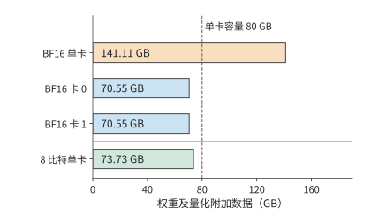
图 1-7 DeepSeek-R1-Distill-Llama-70B：BF16 权重共 141.11 GB，两卡均分后每卡约 70.55 GB；分组 8 比特量化后共 73.73 GB。各条使用相同尺度，虚线表示一张 H100 SXM 的名义 80 GB 容量。柱长只计权重及相应量化附加数据。
KV 缓存如何增加单请求的显存需求。 生成文本时，显存还要保存 KV 缓存，供后续计算直接复用；算子执行还需要临时工作区。因此，容量检查应写成
其中 是权重与量化附加数据， 是请求的上下文状态， 是工作区， 是加速器的可用存储容量。以该模型的一条 8192 个 token 的请求为例，BF16 KV 缓存为 2.5 GiB，约 2.68 GB；再预留 2 GiB、约 2.15 GB 给工作区，8 比特方案总共约占 GB，符合这一容量预算。第 2 章将从模型层数与注意力结构推导 KV 大小，并计算更长上下文和更多并发请求的内存需求。
换成名义显存为 24 GB 的 RTX 4090，同一份 73.73 GB 权重就超过了三张卡合计的 72 GB。按相同的名义容量预算，仅保存权重也至少需要四张；还要逐卡检查 KV 和工作区。模型与精度相同，单卡容量不同，所需加速器数量就会改变。
网络传输也要做同样的单位换算。网络带宽常以 bit/s 计量，8 bit 为 1 byte，所以一张 400 Gbit/s 的 ConnectX-7 网卡，线速（链路的标称传输速率）等于 50 GB/s。按此线速传输 1 GB 数据需要 20 ms。每次传输还需要启动时间，协议开销和共用链路的其他流量也会影响应用实际获得的带宽。沿传输路径计入这些因素，便能更细致地估算通信时间。
练习 1-2〔核心〕：不同权重精度下的显存需求与多卡分配
DeepSeek-R1-Distill-Llama-70B 的 BF16 权重占 141.11 GB，8 比特量化权重占 73.73 GB。部署在 H100 SXM 上，每张卡有 80 GB 显存。为每张卡预留 5 GB 状态与工作区，分别判断单卡部署和将权重均分到两张卡的方案能否容纳模型。再考虑两张显存容量不同的卡：一张 48 GB 的 RTX A6000 和一张 80 GB 的 H100 SXM，分别判断两种精度下能否完成部署，并为可行的方案给出一种权重分配方式。最后将 400 Gbit/s 换成 GB/s，求传输 1 GB 的理想时间。
1.3 用几个数字估算一次模型执行
1.3.1 生成一个 token，先检查什么
例题 1-1：70B 模型的单步生成如何接近 10 ms 目标？ 给定一张 H100 SXM，能否让上一节的 DeepSeek-R1-Distill-Llama-70B 在 10 ms 内生成一个新 token？先考虑每参数一字节存储，再比较算力翻倍、带宽翻倍和批内权重复用。
解：先检查显存容量，再计算运算量和读取量。
为便于手算，将该模型的参数量近似取为 ，先按每个参数一字节估算主要权重的数据量，读入后转换为 BF16 参加矩阵运算。单个请求每步处理一个新 token，每步从显存读取一遍这些权重。
估算条件：权重读取与矩阵计算充分重叠。 容量采用上一节计入量化附加数据的 73.73 GB 结果；本节先将主要权重的读取量近似为 70 GB。时间模型只计主要权重矩阵的乘加和一次完整权重读取，采用资源表中的 BF16 矩阵峰值与 HBM 带宽；读取和计算按充分重叠估算。
单请求的容量预算上一节已经检查。生成速度方面，权重加载到显存之后，每一步仍需将参与计算的权重送到计算单元；按上述近似，每步读取约 70 GB。
图 1-8 本例按每参数一字节，将主要权重读取量近似取为 70 GB。权重驻留显存，计算单元每步沿同一接口读取一遍；用读取量除以接口带宽，得到 20.90 ms 的读取下界。
这 20.90 ms 的读取开销会在每个生成步骤重复出现。对单个请求，下一步的输入由当前输出确定，后续步骤要沿这条依赖逐次推进。
计算量也可以先做近似。一次矩阵与向量的乘法中，每个权重通常参与一次乘法，所得乘积再累加到结果中；按乘法与加法分别计数，大约对应两次浮点运算。因此，本例的主要矩阵运算量近似为：
的来源是：在投影（用权重矩阵对特征向量做的线性变换）中，每个权重与一个 token 特征向量中的对应分量相乘，再将乘积累加到输出中。参数矩阵中的权重越多，这部分工作量就越大；一批中参与计算的 token 数增加时，同一权重矩阵处理更多 token 的特征向量，运算量随之增加。第 2 章将展开真实模型，在这部分线性工作之外加入随上下文长度变化的注意力交互。
把 batch size 记为 ，并让这 个请求共同使用一次读入的权重，就得到这一教学模型的三个量：
前两个式子在这一步恰好相等，是因为权重保存一份、读取一遍。执行下一步生成时，驻留量仍是 ，却会再增加一次 的读取。 增大则增加本次运算量：同一份权重要与更多请求的当前输入 token 向量做乘加运算。第 2 章将进一步加入各请求独立的上下文状态。
1.3.2 计算与读取分别需要多久
把 与 分别除以相应的资源能力，得到单请求的两项时间下界。
权重读取的时间下界约为矩阵计算的 148 倍。按标称算力，矩阵运算耗时极短；显存把权重送到计算单元却需要长得多的时间。完成当前步骤之前，这些数据必须全部读入。10
原因在于，本例每读取一个权重只做一次乘加。计算单元迅速处理完已读入的数据后，又要等待后续数据。提高算力只能缩短乘加耗时，无法加快显存读取。
这两项时间应当相加，还是取其中较大者，取决于读取与计算能否重叠。若数据分块到达，计算当前块时可以继续读取下一块；在充分重叠的简化模型中，耗时下界为：
进入稳定阶段后，每块数据都要经过读取和计算，较慢的一项决定处理速度。本例中，读取权重远慢于矩阵计算，因此优化应首先针对这 20.90 ms 的读取时间。
讨论：算力、带宽与批内复用分别能缩短多少生成时间？ 仅权重读取就至少需要 20.90 ms，已经超过 10 ms 的目标。虽然显存能容纳这些数据，读取速度仍然达不到要求。先分别比较增加算力与增加带宽的效果。
把计算能力翻倍，矩阵计算时间从约 0.1415 ms 变为 0.0707 ms，纯权重读取仍需要约 20.90 ms，决定执行时间的读取下界保持不变。把 HBM 带宽翻倍，读取时间才会降为约 10.45 ms，当前下界随之下降。两种改动都提升了一项硬件能力，但对任务耗时的影响不同。
另一种办法是减少需要读取的数据。运算量不变时，把权重减半，读取下界也降到约 10.45 ms。带宽翻倍让读取速度加倍，权重减半则让待读取的数据减少一半，两种办法在这条算式中取得相同结果。第 2 章和第 5 章将讨论低位宽表示的格式和转换过程。
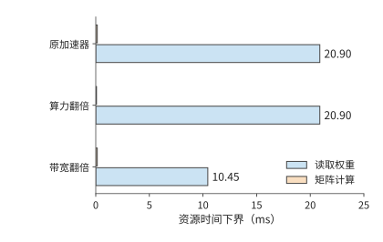
图 1-9 保持运算量与读取量不变，分别把算力或带宽翻倍。蓝条是权重读取下界，橙条是矩阵计算下界；较长的读取项决定这组条件下的优化方向。各柱分别表示计算或数据读取的时间下界，完整执行仍须满足依赖关系。
接着改变请求组织。假设 8 个请求同时处理并共享一次权重读取，整批的权重读取仍是 70 GB，矩阵运算量则约为单请求的 8 倍。这时矩阵计算的时间下界约为 1.13 ms，读取下界仍为 20.90 ms。若这一批产生 8 个输出，每个输出分摊的权重读取时间约为 2.61 ms。
整批执行产生八个输出，吞吐因而从单请求模型的约 47.9 token/s 提高到约 383 token/s，而每个请求仍须等待整批执行完成。批内复用增加同一时间内生成的输出数，单请求延迟则取决于它经历的执行与等待。
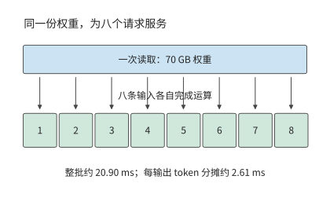
图 1-10 一批八个请求共享一次权重读取，各产生一个输出。整批读取仍需约 20.90 ms，除以八得到每输出分摊的服务时间；每个请求经历整批执行。“每输出 token 分摊”是整批耗时除以输出 token 数，用于换算吞吐，不是单个请求的响应延迟。
batch 增大到一定程度后，计算时间将追平权重读取时间。令 ，得到转折点
本例取 、、，得到 。在这一只计主要矩阵运算与权重读取的模型中，batch 较小时，增加请求可以分摊权重读取开销；超过约 148 后，计算耗时超过权重读取耗时，继续增加 batch 会近似按比例增加整批时间。该转折点只比较矩阵运算与权重读取，没有计入各请求的上下文状态：按 1.2.3 节的容量预算，一张 H100 SXM 容纳 73.73 GB 权重后只剩约 6.27 GB，无法容纳 148 条请求的 KV。
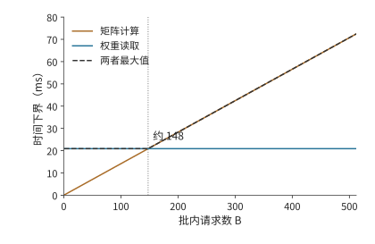
图 1-11 批内请求增加时，矩阵运算量按 增长，权重读取保持每批 70 GB。约 148 个请求处两项下界相等，随后计算耗时决定整体速度。
把每批输出数 除以上图中的时间下界，便得到这组题设对应的吞吐上界。转折前，共享的读取由更多输出分摊；转折后，计算时间与输出数一起增长，曲线逐渐趋于平坦。
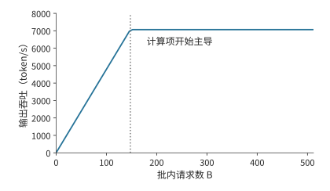
图 1-12 上述批处理模型的理想输出吞吐率。每批输出数除以时间下界得到曲线；竖虚线与前图对应同一个约 148 请求的转折点。
同一转折也可以用算术强度 描述，即每读取一字节数据所完成的运算次数。当 小于加速器的算力与带宽之比 时，读取所需时间更长；超过该比值后，计算所需时间更长。这就是第 4 章 Roofline（屋顶线）模型的出发点。11
练习 1-3〔核心〕：带宽与 batch size 如何影响单步生成时限
采用例题 1-1 的模型与加速器，将有效带宽设为标称值的 70%，有效计算吞吐率设为峰值的 50%。分别取 ，计算整批执行时间的下界、平均每个输出 token 分摊的执行时间，以及理想吞吐率。目标是每请求每步不超过 10 ms：哪些 batch size 仅根据时间下界就可以判定无法满足目标？再把权重读取量减半、运算量保持不变，重新判断。求计算时间与读取时间相等时的 batch size ，并解释为什么每个输出分摊的执行时间减少，并不意味着每个请求的单步延迟缩短。
1.3.3 用实测检验估算
前面的模型预测了两个趋势：batch 较小时，吞吐随 batch 增加；整批时间则受到一次权重读取的限制。真实程序中，每条新增请求还会增加上下文访问与计算。图 1-13、1-14 给出 Qwen3-8B 在 RTX PRO 6000 Blackwell Workstation Edition 上使用 BF16 权重的测量结果。这张卡有 96 GB 显存、1.792 TB/s 显存带宽，BF16 输入、FP32 累加的稠密矩阵峰值为 503.8 TFLOP/s。vLLM 是加州大学伯克利分校等机构的研究者在 2023 年提出的开源推理服务系统，负责组织模型请求并执行推理，最初重点解决的是 KV 缓存浪费显存、限制 batch size 的问题。本次采用 0.23 版本的 eager 模式，即按程序运行顺序逐项向加速器提交工作。每请求输入 2048 个 token、生成 256 个 token，每档 batch 测量三次。12 吞吐表示单位时间内产生的输出数；每输出 token 时间（time per output token，TPOT）在这里表示客户端观察到的平均输出间隔。
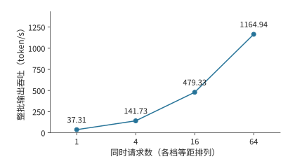
图 1-13 Qwen3-8B 实测的整批输出吞吐。四档请求数等距排列，纵轴从零开始；模型、精度、输入输出长度和计时范围保持一致。
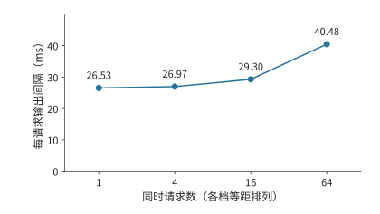
图 1-14 同一组实测中的每请求输出间隔。吞吐增加的同时，单个请求的平均间隔也在增大；两张图分别说明加速器的输出速度和用户的等待时间。
从 1 个请求增到 64 个请求，整批吞吐约提高 31 倍，单请求输出间隔则从约 26.5 ms 增至 40.5 ms。两幅图合起来描述批处理的取舍：加速器在同样长的时间内完成更多请求的工作，每个请求完成一步生成所需的时间却更长。
图 1-13 的吞吐按整批输出数除以处理这批请求的总时间计算，其中包括输入处理时间，三次测量取中位数。TPOT 则先对每个请求计算首末输出事件之间的时间，再除以其间的 255 个输出间隔，然后取同批请求的中位数，最后取三次测量的中位数。前者描述整个实例的输出速度，后者描述单个用户经历的生成节奏。第 3 章将进一步分析请求到达、排队和少量慢请求对这些指标的影响。
这一趋势可以用权重与上下文状态的区别来解释。多个请求共同使用模型权重，但各自保存上下文状态。并发增加时，一次矩阵运算会同时处理更多请求的当前输入 token 向量，权重得到更多复用；与此同时，注意力计算和上下文访问也随请求数增加。
在基本模型中补上这部分随请求数增加的工作，可先把一步耗时写成
其中 是每请求的运算量， 是每请求的状态读写量。batch 增加时，权重读取开销由更多输出分摊，但各请求的状态读写总量也随之增加。下一章将根据实际模型计算这些工作量，并预测上下文变长后，计算时间与读取时间相等的转折点会移到哪里。
练习 1-4〔核心〕：用实测吞吐与输出间隔检验批处理模型
根据图 1-13、1-14 标出的四档并发请求测量值，计算各档并发相对于单请求的吞吐率之比，以及 TPOT 的增长比例。假设增加并发后仍只受共享权重读取限制，计算与上下文访问都不增加耗时，吞吐率应怎样变化？对照实际结果，提出两个可以通过测量区分的解释，并设计一次只改变上下文长度的测量来判断它们。指出测量前需要保持不变的模型、输出长度与计时起止点。
回看这次估算，全程都在回答五个问题：搬什么、搬多少、搬几次、经过哪里、谁在等待。 模型结构决定需要哪些权重，位宽和参数量决定存储大小，批内复用改变了读取次数，显存接口提供了带宽，执行依赖决定了等待。这五个问题把模型结构、数据路径和执行顺序连成一份可以逐项计算的预算。
1.3.4 实测为何达不到极限：模型漏项还是系统开销
做系统优化，常见的做法是与旧实现比较：新算子比旧的快了三成，就算成功。可是不知道极限在哪里，就无法判断这三成是已经逼近上限，还是离上限仍有一个数量级。正确的起点是先按第一性原理算出硬件允许的上限，再看实测离上限有多远。以本章的实测为例：按 1.792 TB/s 的显存带宽，一步 decode 读取权重与旧 KV 至少需要 8.62 ms，而 batch 为 1 时实测的输出间隔是 26.5 ms，MBU 只有 33%。这样的差距有两种来源，处理方式截然不同。第一种是理论模型漏了项：上面的模型只计入权重与 KV 的读取，没有计入注意力之外的向量运算和采样；补上这些项，下界上移，差距随之缩小，修正的是模型而不是系统。第二种是实现本身的开销：本次实验以 eager 模式逐个提交 kernel，每次提交都要经过主机上的 Python 代码、驱动和 PCIe，加速器在两次 kernel 之间空转；客户端逐步记录日志，又占用了主机时间。这些开销与硬件无关，是可以去掉的。要分清两种来源，只能靠每次只改变一个条件的测量。同一台卡上关闭逐步日志后补测，输出间隔降到 12.1 ms；只按加速器上的事件计时，一步模型执行为 10.7 ms，与 8.62 ms 的下界只差两成。13 可见三倍的差距大部分是主机一侧的系统开销。后续各章凡是实测与下界不符，都按这一顺序检查：先问模型有没有漏项，再问实现有没有开销。
1.4 需求如何推动架构设计
前面的估算把硬件当作给定条件；反过来，这些硬件本身也是为应对具体需求而设计的。推动架构变化的因素主要有两类：需求变化，如业务规模扩大或出现新的负载；硬件变化，如某类器件的性能提升快于其他器件。两类变化最终都体现为比例的改变。计算量与数据读取量、带宽与处理能力、需求增长与单芯片能力，这些比例一旦改变，原先合理的分工就可能不再合算。本节先分析三个案例：Google 在 2013 年面对的语音推理需求、微软在 2015—2016 年扩展 Azure 云网络的需求，以及华为在大模型发展过程中组织多设备计算与存储的需求；再说明这类变化如何在 AI 系统中逐级传递。
1.4.1 TPU
TPU 是 Google 为神经网络计算设计的张量处理器，其第一代产品记为 TPU v1。介绍这代产品的论文回顾了一次需求判断。Google 很早就讨论过在数据中心使用 GPU、可在部署后配置硬件逻辑的 FPGA，或专用芯片，但在一些早期应用中，既有数据中心的空闲资源已经足以满足需求。2013 年，一项语音搜索使用量预测改变了讨论：如果每位用户每天使用三分钟语音搜索，满足这项计算需求可能需要让数据中心规模翻倍。Google 因而推进专用推理芯片设计，TPU v1 于 2015 年进入数据中心部署，架构论文于 2017 年发表。14
这一判断可以用简单的算式表示：把每天的请求量记为 、每请求需要的计算量记为 ，每日总需求就是 。请求量增加，现有设备的空闲能力最终会用尽；此时可以增加通用服务器，也可以开发专用处理器。后者有前期开发成本，却可能降低每请求的设备时间和能耗；服务规模越大，累计节省的成本就越容易抵偿前期投入。
专用处理器可以为反复出现的矩阵运算配置更多计算单元，再用片上缓冲和数据通路为计算单元提供输入。响应时间与功耗要求决定了应如何分配计算、存储和通信资源。这样，应用规模的变化就落实到了芯片设计上。
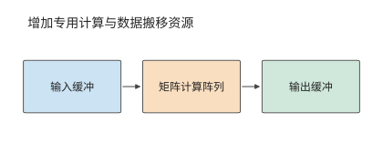
图 1-15 专用处理器围绕反复出现的矩阵运算组织计算阵列和输入输出缓冲。缓冲是临时保存待计算或已算完数据的存储区域；三个方框及其箭头展示数据搬移方向。
第 4 章将介绍 TPU 的矩阵阵列、缓冲和数据通路。每日计算需求 接近数据中心的空闲算力时，专用处理器便可能比通用处理器更合算。
1.4.2 SmartNIC
微软 Azure 在 2015 年设计新一代 40 Gbit/s 云服务器时，面临另一类增长：网络带宽提高，虚拟网络策略也日趋复杂。SmartNIC（智能网卡）是能够在网卡上执行部分数据处理的设备。微软从 2015 年末起在新部署的 Azure 服务器中安装基于 FPGA 的 SmartNIC，2016 年向客户提供 Accelerated Networking（加速网络）服务。FPGA 的硬件逻辑可以重新配置，网络处理因此能随策略更新而改变。15
这项设计要同时满足两个要求：既把更多 CPU 核留给租户的应用，又能快速更新网络隔离、转发和访问控制规则。云服务器上的网络处理占用的正是这些 CPU 核：CPU 除了运行应用，还要处理收发的数据包。虚拟机是在一台物理主机上划分出的独立计算环境。多个虚拟机共用物理网络时，平台需要识别数据的归属、查找转发规则、完成封装，并维持隔离。
先估算这部分工作占用多少 CPU。40 Gbit/s 链路在最小帧条件下每秒约需处理六千万个包。若单核每秒处理一千万至两千万个包，持续转发所需核数约为
其中 为包到达率， 为单核处理率。链路带宽提高使 随之增大， 却没有同步提高，所需核数便随两者之比增加。这些核反复完成相同的包处理流程；将相应工作移到网卡，就可以把 CPU 时间留给应用。16
Azure 的做法是让主机软件管理复杂策略，把适合重复执行的包处理规则交给 FPGA。数据经过网卡时就完成这些处理，CPU 可以把更多时间用于客户应用。设计的关键是兼顾软件更新能力与硬件处理速度。
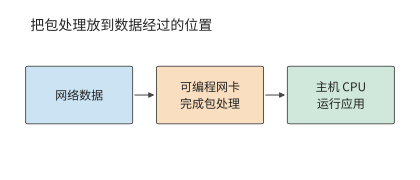
图 1-16 可编程网卡在数据进入主机前完成指定的包处理。图中实线跟踪数据；网卡承担的处理减少主机 CPU 的辅助工作。
将包处理移到网卡后，部分操作可以在数据到达时直接完成，CPU 的工作随之减少。如果网卡还需要主机内存中的数据，就要通过 PCIe 读取；此时，返回延迟和可同时发出的请求数决定了读取速度。第 7 章将用 KV-Direct（让可编程网卡直接处理键值存储请求的系统）分析这种访问。键值存储按唯一的键查找、读取或更新对应的值。
1.4.3 Unified Bus
SmartNIC 改变了单台服务器内部的分工。若问题是单个加速器的资源总量不足，就需要进一步考虑加速器之间如何协作。当单个加速器容纳不下模型和运行状态时，最直接的办法之一是增加加速器。但“总容量变大”与“任务能够高效执行”之间，还隔着工作划分、数据交换和同步。
例如，两张卡的显存总量可能足够保存权重，但执行计算的加速器必须能够访问所需的数据。若一步计算依赖另一张卡的结果，就要等待交接；若多张卡共同完成一个操作，还要组织相应的协作。加速器数增加带来了资源，也增加了连接这些资源的工作。
华为面向昇腾等异构计算设备推进的 UB（Unified Bus，统一互联），把问题扩大到多设备协作。笔者于 2020—2023 年参与这一项目，相关研究在 2019 年已经启动，早于 OpenAI 于 2020 年发布自回归语言模型 GPT-3；GPT-3 展现出大模型的能力后，业界更广泛地认识到多设备协同的需求，项目投入随之扩大。模型训练所需的算力增长远快于单个加速器能力的提升，两者之比不断扩大，协同工作的加速器只能越来越多。
这一时期的核心需求是让规模不断增长的模型使用多张加速卡，并使计算设备更方便地访问其他设备上的内存和数据。数据一旦跨过主机边界，软件就要改用消息传递接口、重新安排缓冲区，再经过网卡驱动和协议栈，每多一层抽象就多一段时间。UB 让设备直接访问其他设备的内存，把这些抽象层去掉，使一次远程访问的耗时逼近线路时延决定的下限，上层也能更灵活地组织资源。统一的访问机制使设备能直接使用更大范围内的资源，拓扑则决定这些访问的距离与带宽。模型分工与互联设计由此紧密相连。第 6.5.5 节从超节点规模的角度讨论 UB 的组织方式，第 7.3 节和第 7.4 节沿着一次远程访问的路径推导它的延迟、请求速率和连接状态，并算出去掉的各层抽象原来各占多少时间。
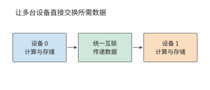
图 1-17 统一互联连接不同设备的计算与存储资源。模型分工确定要交换什么，互联负责把数据送到后续使用它的设备。
以本章的两卡模型部署为例：权重均分可以满足逐卡容量约束，但每个阶段还要等待输入数据和前序结果。增加加速器改变了 和可用算力，也引入新的通信量与依赖。因此，第一步先检查每个加速器能否容纳所需数据，第二步计算各加速器的运算量与读写量，第三步根据执行依赖计算总时间。模型再大、加速器再多，这一分析顺序仍然成立。
1.4.4 变化的逐级传递
三个案例中的设计一经部署，又会带来新的约束。FPGA 部署到 Azure 服务器以后，云平台需要负责 FPGA 逻辑的更新和故障处理15；UB 把大量加速器连成一体以后，每次同步要等待的设备增多，可能出错的部件也增多。在 AI 系统中，这种逐级传递仍在继续，下表按本书章节顺序列出主要环节。
| 变化 | 不再成立的假设 | 章节 |
|---|---|---|
| 神经网络的执行时间集中在矩阵运算 | 通用处理器能以合理的面积与功耗完成主要计算 | 第 4、5 章 |
| 模型权重超过单卡显存 | 一个模型可以放在一张卡上 | 第 6 章 |
| 训练与推理跨越多台服务器同步执行 | 网络流量来自相互独立的数据流，可以统计复用 | 第 7 章 |
| decode 每读一遍权重只完成少量计算 | 峰值算力决定执行速度 | 第 8 章 |
| 上下文变长，KV 的规模接近甚至超过权重 | 上下文状态较小，可以随时重算 | 第 9 章 |
| 训练规模达到上千张卡 | 故障是偶发事件 | 第 10 章 |
| Agent 与 RL 负载成批创建工具环境 | 容器中的程序相互独立，各自决定运行节奏 | 第 11 章 |
| 端侧设备能够运行模型 | 计算集中到云端总能缩短完成时间 | 第 12 章 |
与通用操作系统和云平台相比，AI 系统有一个有利条件：负载种类少，而且事先已知。通用平台要运行事先未知的程序，只能依靠统一的抽象、严格的隔离和统计复用；AI 系统围绕少数模型和确定的执行过程设计，可以提前掌握第 1.1.1 节所说的计算与数据依赖，并据此打破原有的抽象边界。例如，第 11 章的 RL 沙箱平台根据训练框架提供的抢占信息，主动暂停相应的沙箱。
AI 系统中的许多单项技术并非新发明：第 8 章的 KV 分页管理借用操作系统的分页，第 11 章的沙箱放置采用 2001 年提出的 power-of-k-choices 随机选择算法，虚拟机内存回收沿用 2002 年提出的 balloon 机制。17比例改变以后，原先不划算或用不上的方法又变得合算；一项技术是否适用，仍需按当前的比例重新计算。
从语音推理到云网络，再到大模型的多设备执行，需求与硬件的变化决定了首先要解决哪个瓶颈，也重新划分了硬件、软件与互联之间的工作。对照开篇的六层图，这些设计都重新组织了计算与数据搬移。三条线索贯穿后续各章：比例的变化解释为什么需要新的设计，数据搬移说明新设计改变了什么，第 1.3.4 节的物理极限衡量设计达到了什么程度。本书的主线由此展开：数据搬移塑造了 AI Infra 的架构。
谬误与陷阱
误区：峰值算力翻倍，执行速度就会翻倍。 先检查当前执行是否受计算能力限制。例题 1-1 中，权重读取的时间下界远大于矩阵计算的时间下界，提高矩阵峰值算力几乎不改变执行时间的下界；若优化的是完整任务的一部分，还要用 Amdahl 定律检查收益的上限。
误区：显存能容纳权重，就能支持目标并发数。 权重只是常驻数据的一部分。上下文状态、工作区和运行时预留的空间共同占用显存，多加速器还必须逐卡核算。
误区：比旧实现快了三成，优化就算成功。 不知道硬件允许的极限，就无法判断这三成是逼近了上限，还是离上限仍有一个数量级。应当先算出极限，再按第 1.3.4 节的顺序查明差距来自模型漏项还是系统开销。
误区：在上一代场景中成熟的系统，可以直接用于新的负载。 每种系统设计都以设计时的比例为前提。通用容器平台假定请求来自相互独立的租户，程序自行决定运行节奏；RL 训练中的沙箱却成批创建，节奏由 GPU 一侧决定，照搬原有设计会让昂贵的加速器空等（第 11 章）。沿用一种设计之前，应先检查它所依赖的比例是否仍然成立。
误区：吞吐率提高，每个用户的等待时间就会缩短。 批内复用减少每个输出分摊的读取开销，但每个请求仍须经历排队和整批执行。吞吐与响应时间应同时报告。
本章数字速查
本表用第 1.3.3 节实测采用的 Qwen3-8B 汇总模型侧的关键数字。prefill 一次处理已有输入，并得到首个输出；decode 每次把一个新 token 送入模型，利用已经保存的 KV 继续生成。本表固定 BF16 权重、激活和 KV，并发为 1；prefill 的输入为 2048 个 token，decode 则在已有 2048 个 token 的上下文后执行一步。18
| 模型需求 | 数值 | 如何使用 |
|---|---|---|
| 完整 BF16 权重 | 16.38 GB | 判断模型加载所需的显存 |
| 每个上下文 token 的全模型 KV | 144 KiB | 上下文长度乘以此数，得到单请求 KV 容量 |
| 2048 个 token 的上下文的 KV | 288 MiB | 约 0.302 GB，随独立请求数增加 |
| 2048 个 token 的 prefill 的矩阵运算 | 29.69 TFLOPs | 除以相应矩阵算力，得到计算时间下界 |
| 一步 decode 的矩阵运算 | 16.34 GFLOPs | 输入为一个 token，另访问已有上下文 |
| 一步 decode 的主要权重读取 | 15.14 GB | 权重读一次；嵌入层（把 token 编号映射为向量的查找表）只读取当前 token 对应的一行 |
| 一步 decode 的旧 KV 读取 | 0.302 GB | 每份上下文 KV 读一次时的字节数 |
用计算量与读取量估算执行时间下界。 这里采用图 1-13、1-14 实测所用的 RTX PRO 6000 Blackwell Workstation Edition，先单独计算矩阵运算和数据读取：按 503.8 TFLOP/s 矩阵峰值换算，prefill 的矩阵运算约需 58.9 ms，decode 约需 0.0324 ms；按 1.792 TB/s 显存带宽，一步 decode 的主要权重与旧 KV 读取约需 8.62 ms。实测 batch 为 1 时的输出间隔约 26.5 ms，约为该读取下界的三倍，差距的来源见第 1.3.4 节。这里分别估算计算与读取所需的最短时间，完整执行还要沿算子顺序加入其他运算、实际访存和启动时间。第 2—5 章将逐项建立这些计算。
这组数字解释了两阶段的差别：prefill 在一次调用中处理大量输入，矩阵工作量较大；单请求 decode 每次只处理一个 token，却仍要读取大量权重和上下文。提高计算吞吐、提高带宽和增加批内复用，分别作用于不同的时间项。
本章小结
应用用模型与上下文表达行为，许多任务因此共享相近的底层计算。掌握模型中的计算依赖和状态驻留时间，就能统筹考虑原来分属不同层次的设计选择：改变数据表示、合并执行步骤、复用准备工作，或缩短加速器间数据传递和同步的时间。后续各章将量化这些改动的收益，说明哪些设计取舍因此改变，再根据新的约束选择模型与系统方案。
分析系统时，先检查数据能否放下，再用运算量和读写量估算耗时，最后根据执行顺序分析重叠与等待。按峰值算出的下界就是硬件的物理极限，下界与实测之比就是利用率；两者的差距不是模型漏了项，就是系统有可以去掉的开销。在 70B 算例中，权重读取比矩阵计算慢约 148 倍，因此增加带宽、减少读取和提高复用更有助于缩短时间。批内共享可以提高吞吐，而每个请求的响应时间还要包括整批执行和排队。
本章核心练习为 1-2、1-3、1-4，分别练习单位换算与可行性判断、条件改变后的资源估算，以及预测与实测结果的比较。下一章将根据真实模型配置，细化 计算量与权重读取量的估算，为这些计算提供具体的矩阵尺寸与状态大小。
-
相关研究见抽象边界调研；基础模型承接多种下游任务的讨论见 Stanford CRFM。 ↩
-
“十八层宝塔”由华为半导体首席科学家廖恒博士在 2026 年 7 月的一次公开长访谈中提出，用来描述从应用到制造工艺的层层依赖。 ↩
-
请求图是通用职责示意；调度与状态管理的职责划分可参照 v0.26.0 的 vLLM Scheduler 文档；1.3.3 节的实测使用 vLLM 0.23.0。路由策略、tokenizer 位置以及 prefill／decode 是否分离属于部署选择。 ↩
-
具体产品例子见 NVIDIA GB200 NVL72、硬件指南与网络指南。图 1-5 使用一般化连接。 ↩
-
DeepSeek V4.1 官方技术报告，第 1、2、3 节与第 6 节；跨章会话的固定条件与复算。 ↩
-
Jeff Dean，LADIS 2009 演讲，本地 PDF，“Numbers Everyone Should Know”及纸笔估算部分。寻道算例设连续执行 20 次随机读取。 ↩
-
NVIDIA，H100 架构白皮书与规格页面快照。本章采用 SXM 形态与 BF16 稠密矩阵运算规格；原始输入版本和校验值见配图来源清单。 ↩
-
数字取自固定 GPU 规格与逐项出处，对应
rtx4090、a100-80gb-sxm、h100-sxm；各精度、累加方式与稠密条件分别核对。GB 与 TB 在本表均为十进制单位。 ↩ -
参数与 BF16 字节数来自 DeepSeek-R1-Distill-Llama-70B 公开权重索引及固定版本配置。分组量化的权重总量采用逐项计算记录中的全模型汇总，每组 128 个参数、scale 占 2 字节。RTX 4090 的 24 GB 名义规格见官方页面存档。本节用规格标称 GB 作统一容量预算。 ↩
-
70B 近似预算复算及配套场景；单位与逐卡容量复算。1.3 的时间估算图读取这组固定的 70B 近似结果；1.2.3 的容量图使用真实权重索引与分组量化结果。 ↩
-
Williams、Waterman、Patterson，Roofline 论文。 ↩
-
练习 1-4 记录说明、结构化分析结果及后续补测。正文和图 1-13、图 1-14 采用最初记录的短输入组。 ↩
-
补测记录与加速器事件计时。补测同时关闭了前缀缓存并重新构造了输入，逐步日志的影响无法与这些条件完全分开；加速器事件只覆盖模型执行，不含采样与输出。 ↩
-
Jouppi 等，TPU v1 论文，第 2 节关于起源、架构与实现的说明。三分钟语音搜索是论文记载的历史需求预测。 ↩
-
Firestone 等，微软，Azure Accelerated Networking: SmartNICs in the Public Cloud，NSDI 2018；原论文文本。摘要给出 2015 年末部署、2016 年向客户提供服务的时间，第 3 节说明减少 CPU 占用、保持可编程性与支持更高带宽的设计目标。 ↩↩
-
笔者博士论文，第 4.2.1 节简单转发基线；核数预算复算。约六千万包每秒来自 40 Gbit/s 与每帧占用 84 字节线时的计算，3 至 6 核对应简单转发基线。 ↩
-
power-of-k-choices 见 M. Mitzenmacher, The Power of Two Choices in Randomized Load Balancing, IEEE TPDS, 2001；balloon 机制见 C. A. Waldspurger, Memory Resource Management in VMware ESX Server, OSDI 2002。两篇文献均由 DSec 论文引用，相应机制见第 11.2.2 节与第 11.3.2 节。 ↩
-
速查数字复算源码根据固定 Qwen3-8B 配置统计 prefill 与 decode 的矩阵运算，读取量来自批内权重复用计算。权重占用包含完整嵌入表，逐步生成时只读取当前 token 对应的嵌入行；读写时间采用每份主要数据访问一次的理想条件。 ↩
读者自制学习版，不是作者的官方版本。橙色解读由 AI 辅助生成，可能有错；数字和结论以原书为准。